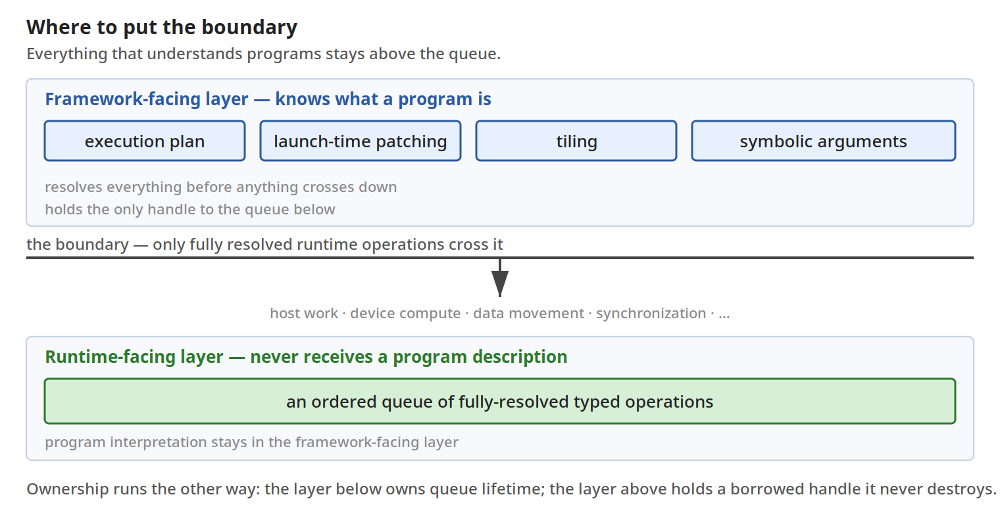
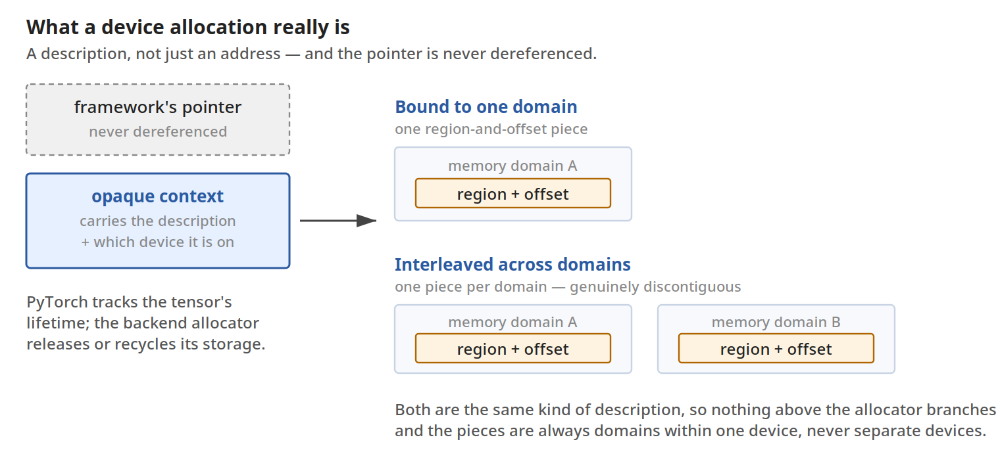
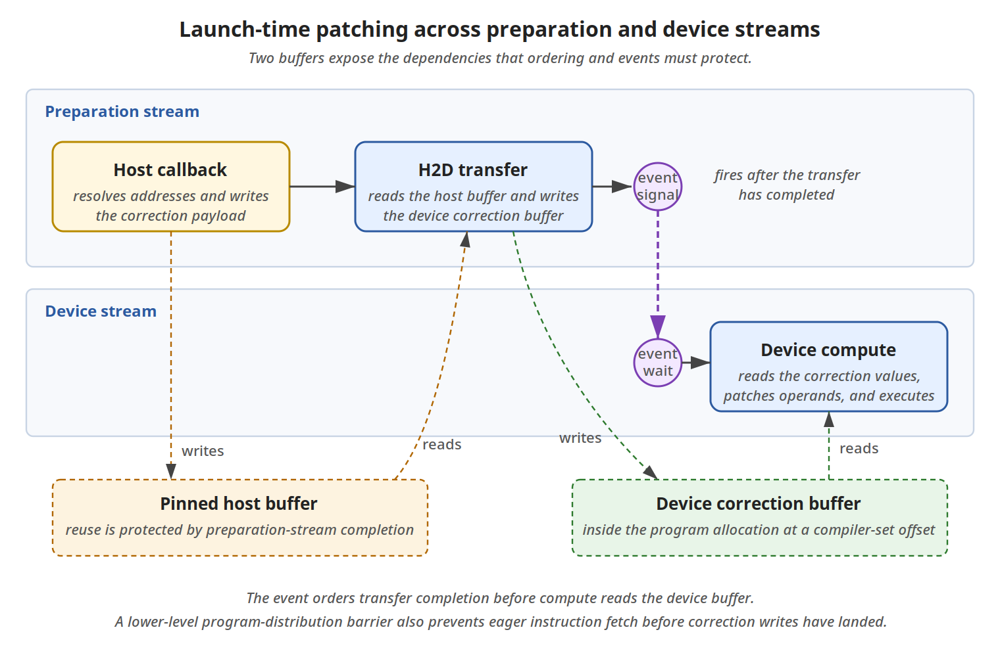

Spyre是IBM的数据流AI加速器，计算由数据到达触发而非指令流驱动。IBM团队没有为它另起一套运行时，而是把PyTorch现有的设备、分配器、stream、事件、编译器抽象一一映射到Spyre的运行时约束上，做出了一个原生PyTorch设备。
Spyre卡有32个核心，由高带宽环形互联，每个核心有2MB本地scratchpad，另有最高128GB LPDDR5存放张量和程序。两级内存分属不同主人：运行时管理LPDDR5，编译器在编译期就定好了LPDDR5与scratchpad之间的数据搬运，数据以128字节为单位移动，布局与对齐直接影响效率。
要做成原生PyTorch设备，必须尊重底层硬件的执行模型。四条约束决定了整个设计：计算由数据触发而非单一指令流，编译后的Spyre内核包含多个功能单元各自的程序，靠硬件队列连接，进度由操作数就绪驱动；运行时重叠来自独立管线而非并发计算，传输可以与计算并行，但两个计算操作共用一条运行时计算队列只能串行；有序队列保证每条stream的完成顺序；程序提前编译且布局固定，调用者拥有的张量地址在编译期只能是符号，运行时才能填。
PyTorch已有概念可以直接对应这些约束。设备身份靠PrivateUse1注册，两行调用给spyre一个真正的设备名，之后tensor.to("spyre") 就能工作，分发器把Spyre张量路由到Spyre内核。
torch.utils.rename_privateuse1_backend("spyre")
torch._register_device_module("spyre", make_spyre_module())其余抽象各就其位：torch.spyre放后端专属控制，torch.accelerator给可移植代码统一接口；实现device-guard hook就让torch.Stream(device="spyre") 原生可用；设备分配器接口管显存分配与释放，外加内存统计、缓存控制；张量引用计数归零时PyTorch回调后端分配器释放显存；torch.compile(backend="inductor") 让FX图留在Inductor编译管线；事件表达stream间顺序，Spyre在内部用运行时事件和派生依赖边实现同一模型。
运行时需要一个有序、异步、按设备划分的工作投放点，PyTorch里这个抽象就是stream。关键判断是边界放哪：懂程序的一切留在stream之上。框架侧把编译产物转成预备好的launch计划，记录运行该产物所需的主机工作、数据搬运、设备计算和同步；一旦经stream提交，下层运行时只看到带显式操作数和依赖的类型化操作，不再见到程序描述。
预备和launch分属不同时机：把编译产物翻译成可提交操作是每个产物只做一次的工作，launch只是按步骤构造操作并入队。能提前解析的都在首次见到产物时解析掉。
# once, when the compiled artifact is first seen
job_plan = prepare_kernel(spyrecode_dir)
# per invocation
launch_jobplan(job_plan, args)之前走过弯路：早期集成在launch、拷贝、张量参数翻译阶段又建了一套后端专属运行时图，跑一个已编译程序要读盘、反序列化、 stitch参数，主机到设备拷贝也要围着数据转换建小图。这些操作在launch时已完全确定，图处理纯属多余。更糟的是PyTorch看不到张量到底在设备还是主机，误以为全是CPU张量。新边界把FX图留在Inductor，产物只预备一次，之后运行时要的是一份有序的类型化操作配方。

原生设备不能把每个操作都当成输入拷进去、算完拷出来。device="spyre" 的张量需要真正的设备存储，生命周期由PyTorch经分配器掌管。Spyre加了一条硬件约束：框架分配器通常把显存呈现为指针寻址的平坦池，而Spyre按region管理内存，每个region是带句柄的一段连续显存，可装多个张量。句柄预算有限，多租户共享时更紧张，分配器必须用少量大region sub-allocate出对齐块，让众多张量共享handful句柄。
PF模式独占整卡，VF模式多租户共享，后者句柄更紧。但两种模式下分配的描述格式统一：一个或多个region加偏移片段，分配器之上的层不分支判断部署模式。Spyre的分配不止是个地址：基本可寻址单位是region标识、区内偏移、长度，跨内存域交织的张量是多个这样的片段。PyTorch允许分配携带不透明上下文，这份描述就放在那里，引用计数照常负责回收。

编译器知道计算结构但不知道调用者数据在哪，两者必须在运行前对齐。Spyre演进过三代方案，现在只用第三代：launch时打补丁。编译产物布局固定，但张量起始地址留符号位，二进制里是占位变量。填入真实值是计划里的三个普通步骤：主机回调在CPU上把解析好的地址写入pinned主机缓冲；一次传输把它拷进程序自有分配中编译器指定的偏移处；设备端读取这些值并patch操作数。
单stream上完成顺序足以保证三步不竞态；双stream设计里主机回调和传输留在预备stream，设备stream在传输完成事件后才计算。队列顺序管的是提交顺序，管不了提前取指的硬件：Spyre的程序分发单元会eager取指，可能在补丁落地前把旧字节取走，所以在程序分发层加了一道屏障，按住取指直到补丁落地。

传输和计算走独立硬件管线，但单stream仍会让一方等另一方。单stream序列里主机准备修正数据、传输进设备、计算消费，下一次迭代才能开始，主机和传输管线在设备计算时闲置。约束是迭代内有序：回调先于传输读缓冲，传输先于计算用修正程序；但迭代N+1的预备可以在迭代N计算时开始，因为它的地址在launch时已知。
运行时把独立工作搬到另一条stream：预备stream为N+1产修正数据，设备stream算N，事件在真正的依赖处汇合。事件就是PyTorch读者熟悉的原语：一条stream记录，另一条等待。预备stream发传输完成信号，设备stream等到信号才计算。运行时还能从设备内存读写footprint派生依赖边，自动插入signal和wait。初始设计用两条队列，机制本身可扩展到任意多条预备队列，只是每条需要独立staging缓冲或完成门控的缓冲池。
用户摸到的表面是熟悉的PyTorch：tensor.to("spyre")、torch.compile、torch.Stream与其他设备无异。代价是算子覆盖、profiling、分布式集合、CUDA专属扩展仍是后端要补的功课，首次调用有编译开销，不支持的操作可能失败或回退。
性能收益来自launch路径的简化：向队列提交类型化操作，替代了为描述这些操作而构建运行时图，每次launch省去一次读盘、一次反序列化、逐参数stitch和一次编译解析。在Granite 3.3 8B、batch 1、序列1024上，仅将图构造从传输路径移除，prefill快9.9%，decode快13.6%；计算分发路径同样简化后，总计prefill 1.7倍、decode 2.4倍，四分之三的收益来自计算路径。映射四的并发是另一笔独立收益：每块从计算路径搬走的主机预备都减少设备闲置。
PyTorch本身不直接给跨stream顺序：事件抽象在框架层，但顺序必须在操作真正所在的地方执行，即看到设备内存footprint的运行时调度器。所以运行时先自建软件事件原语和派生依赖，通过PyTorch公开事件hook向用户暴露是后续工作，目前用户用stream.synchronize() 等待完成。
这也不是单向索取。IBM向上游回馈了openreg参考后端、跨仓库CI中继集成和上游测试筛选工具，让下一个设备团队的路更短。
参考：https://pytorch.org/blog/building-spyre-as-a-native-pytorch-device/